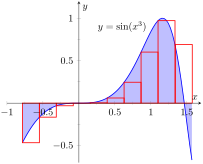
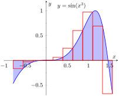
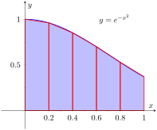
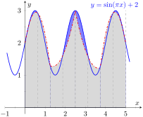

The Fundamental Theorem of Calculus gives a concrete technique for finding the exact value of a definite integral. That technique is based on computing antiderivatives. Despite the power of this theorem, there are still situations where we must approximate the value of the definite integral instead of finding its exact value. The first situation we explore is where we cannot compute the antiderivative of the integrand. The second case is when we actually do not know the function in the integrand, but only its value when evaluated at certain points.
An elementary function is any function that is a combination of polynomial, \(n\)th root, rational, exponential, logarithmic and trigonometric functions. We can compute the derivative of any elementary function, but there are many elementary functions of which we cannot compute an antiderivative. For example, the following functions do not have antiderivatives that we can express with elementary functions:
\(e^{x^2}\text{,}\)
\(\sin(x^3)\text{,}\)
\(\frac{\sin(x)}{x}\text{.}\)
The simplest way to refer to the antiderivatives of \(e^{-x^2}\) is to simply write \(\int e^{-x^2}\, dx\text{.}\)
This section outlines three common methods of approximating the value of definite integrals. We describe each as a systematic method of approximating area under a curve. By approximating this area accurately, we find an accurate approximation of the corresponding definite integral.
We will apply the methods we learn in this section to the following definite integrals:
Figure5.5.1.Graphically representing three definite integrals that cannot be evaluated using antiderivatives
Subsection5.5.1The Left and Right Hand Rule Methods
In Section 5.3 we addressed the problem of evaluating definite integrals by approximating the area under the curve using rectangles. We revisit those ideas here before introducing other methods of approximating definite integrals.
We start with a review of notation. Let \(f\) be a continuous function on the interval \([a,b]\text{.}\) We wish to approximate \(\ds \int_a^b f(x)\, dx\text{.}\) We partition \([a,b]\) into \(n\) equally spaced subintervals, each of length \(\ds\dx = \frac{b-a}{n}\text{.}\) The endpoints of these subintervals are labeled as
Key Idea 5.3.20 states that to use the Left Hand Rule we use the summation \(\ds \sum_{i=1}^n f(x_{i-1})\dx\) and to use the Right Hand Rule we use \(\ds \sum_{i=1}^n f(x_{i})\dx\text{.}\) We review the use of these rules in the context of examples.
Example5.5.2.Approximating definite integrals with rectangles.
Approximate \(\ds \int_0^1e^{-x^2}\, dx\) using the Left and Right Hand Rules with 5 equally spaced subintervals.
Figure5.5.3.Approximating \(\int_0^1e^{-x^2}\, dx\) in Example 5.5.2
Figure 5.5.3 shows the rectangles used in each method to approximate the definite integral. These graphs show that in this particular case, the Left Hand Rule is an over approximation and the Right Hand Rule is an under approximation. To get a better approximation, we could use more rectangles, as we did in Section 5.3. We could also average the Left and Right Hand Rule results together, giving
It is useful to write out the endpoints of the subintervals in a table; in Table 5.5.5, we give the exact values of the endpoints, their decimal approximations, and decimal approximations of \(\sin(x^3)\) evaluated at these points.
Table5.5.5.Table of values used to approximate \(\int_{-\frac{\pi}4}^{\frac{\pi}2}\sin(x^3)\, dx\) in Example 5.5.4
\(x_i\)
Exact
Approx.
\(\sin(x_i^3)\)
\(x_0\)
\(-\pi/4\)
\(-0.7854\)
\(-0.4657\)
\(x_1\)
\(-7 \pi/40\)
\(-0.5498\)
\(-0.1654\)
\(x_2\)
\(-{\pi }/{10}\)
\(-0.3142\)
\(-0.0310\)
\(x_3\)
\(-{\pi }/{40}\)
\(-0.0785\)
\(-0.0005\)
\(x_4\)
\({\pi }/{20}\)
\(0.1571\)
\(0.0039\)
\(x_5\)
\({\pi }/{8}\)
\(0.3927\)
\(0.0605\)
\(x_6\)
\({\pi }/{5}\)
\(0.6283\)
\(0.2455\)
\(x_7\)
\({11 \pi }/{40}\)
\(0.8639\)
\(0.6011\)
\(x_8\)
\({7 \pi }/{20}\)
\(1.0996\)
\(0.9710\)
\(x_{9}\)
\({17 \pi }/{40}\)
\(1.3352\)
\(0.6899\)
\(x_{10}\)
\({\pi }/{2}\)
\(1.5708\)
\(-0.6700\)
Once this table is created, it is straightforward to approximate the definite integral using the Left and Right Hand Rules. (Note: the table itself is easy to create, especially with a standard spreadsheet program on a computer. The last two columns are all that are needed.) The Left Hand Rule sums the first 10 values of \(\sin(x_i^3)\) and multiplies the sum by \(\dx\text{;}\) the Right Hand Rule sums the last 10 values of \(\sin(x_i^3)\) and multiplies by \(\dx\text{.}\) Therefore we have:
Left Hand Rule: \(\ds \int_{-\frac{\pi}4}^{\frac{\pi}2}\sin(x^3)\, dx \approx (1.9093)(0.2356) \approx 0.4498\text{.}\)
Right Hand Rule: \(\ds \int_{-\frac{\pi}4}^{\frac{\pi}2}\sin(x^3)\, dx \approx (1.705)(0.2356) \approx 0.4017\text{.}\)
Average of the Left and Right Hand Rules: 0.4258.
(a)
(b)
Figure5.5.6.Approximating \(\int_{-\frac{\pi}4}^{\frac{\pi}2}\sin(x^3)\, dx\) in Example 5.5.4
The actual answer, accurate to 4 places after the decimal, is 0.4609. Our approximations were once again fairly good. The rectangles used in each approximation are shown in Figure 5.5.6.(a). It is clear from the graphs that using more rectangles (and hence, narrower rectangles) should result in a more accurate approximation.
Subsection5.5.2The Trapezoidal Rule
In Example 5.5.2 we approximated the value of \(\ds \int_0^1 e^{-x^2}\, dx\) with 5 rectangles of equal width. Figure 5.5.3 shows the rectangles used in the Left and Right Hand Rules. These graphs clearly show that rectangles do not match the shape of the graph all that well, and that accurate approximations will only come by using lots of rectangles.
Instead of using rectangles to approximate the area, we can instead use trapezoids. In Figure 5.5.7, we show the region under \(f(x) = e^{-x^2}\) on \([0,1]\) approximated with 5 trapezoids of equal width; the top “corners” of each trapezoid lies on the graph of \(f(x)\text{.}\) It is clear from this figure that these trapezoids more accurately approximate the area under \(f\) and hence should give a better approximation of \(\int_0^1 e^{-x^2}\, dx\text{.}\) (In fact, these trapezoids seem to give a great approximation of the area!)

Figure5.5.7.Approximating \(\int_0^1 e^{-x^2}\, dx\) using 5 trapezoids of equal widths
The formula for the area of a trapezoid is given in Figure 5.5.8. We approximate \(\int_0^1 e^{-x^2}\, dx\) with these trapezoids in the following example.
Figure5.5.8.The area of a trapezoid
Example5.5.9.Approximating definite integrals using trapezoids.
Use 5 trapezoids of equal width to approximate \(\ds \int_0^1e^{-x^2}\, dx\text{.}\)
We approximate \(\int_0^1 e^{-x^2}\, dx \approx 0.7444\text{.}\)
There are many things to observe in this example. Note how each term in the final summation was multiplied by both 1/2 and by \(\dx = 0.2\text{.}\) We can factor these coefficients out, leaving a more concise summation as:
This is the heart of the Trapezoidal Rule, wherein a definite integral \(\int_a^b f(x) \, dx\) is approximated by using trapezoids of equal widths to approximate the corresponding area under \(f\text{.}\) Using \(n\) equally spaced subintervals with endpoints \(x_0\text{,}\)\(x_1\text{,}\)\(\ldots\text{,}\)\(x_{n}\text{,}\) we again have \(\ds \dx = \frac{b-a}n\text{.}\) Thus:
Revisit Example 5.5.4 and approximate \(\ds\int_{-\frac{\pi}{4}}^{\frac{\pi}{2}} \sin(x^3)\, dx\) using the Trapezoidal Rule and 10 equally spaced subintervals.
The actual answer, accurate to 4 decimal places is \(0.4609\text{.}\) So the Trapezoidal Rule with 10 subintervals is an under-approximation by about \(0.0351\text{.}\)
Notice how “quickly” the Trapezoidal Rule can be implemented once the table of values is created. This is true for all the methods explored in this section; the real work is creating a table of \(x_i\) and \(f(x_i)\) values. Once this is completed, approximating the definite integral is not difficult. Again, using technology is wise. Spreadsheets can make quick work of these computations and make using lots of subintervals easy.
Also notice the approximations the Trapezoidal Rule gives. It is the average of the approximations given by the Left and Right Hand Rules! This effectively renders the Left and Right Hand Rules obsolete. They are useful when first learning about definite integrals, but if a real approximation is needed, one is generally better off using the Trapezoidal Rule instead of either the Left or Right Hand Rule. However, there are two other methods that are also generally more accurate than the Left or Right Hand Rule.
Subsection5.5.3The Midpoint Rule
Another method that can be more accurate than the Trapezoidal Rule is the Midpoint Rule:
\begin{align*}
S_M(n)\amp =\sum_{i=1}^n f\left(\frac{x_{i-1}+x_{i}}{2}\right)\Delta x\\
\amp = \sum_{i=1}^n f\left(\overline{x_i}\right)\Delta x\\
\amp \text{ where } \overline{x_i} \text{ is the midpoint of each subinterval,}\\
\amp \overline{x_i}=a+\dx\left(i-\frac12\right)
\end{align*}
Example5.5.12.Using the Midpoint Rule.
Use the Midpoint Rule with \(n=5\) to approximate \(\ds \int_0^1e^{-x^2}\, dx\text{.}\)
We cannot use the same table (Table 5.5.10) that we used for the Trapezoidal, Right and Left Hand Rules when using the Midpoint Rule. The Trapezoidal rule averages the outputs of the function to obtain a more accurate estimate of the definite integral. The Midpoint Rule averages the inputs of each subinterval to create a rectangle with height \(f\left(\frac{x_{i-1}+x_{i}}{2}\right)\text{.}\) Generally \(f\left(\frac{x_{i-1}+x_{i}}{2}\right)\neq \frac{f(x_{i-1})+f(x_{i})}{2}\text{.}\)
So we will create a new table of values as shown in Table 5.5.13. We have \(\dx=(1-0)/5=0.2\text{.}\) The midpoint of the first subinteval is at \(0+0.2(1/2)=0.1\) and each successive midpoint is \(0.2\) from the last.
We approximate \(\ds \int_0^1 e^{-x^2}\, dx \approx 0.7480\text{.}\)
Example5.5.14.Using the Midpoint Rule.
Revisit Example 5.5.11 and approximate \(\ds\int_{-\frac{\pi}{4}}^{\frac{\pi}{2}} \sin(x^3)\, dx\) using the Midpoint Rule and 10 equally spaced subintervals.
Again, a table will be useful. Recall that \(\dx = 3\pi/40 \approx 0.2356\text{.}\) The midpoint of the first subinterval is \(\overline{x_1}=a+\dx/2=-\pi/4+3\pi/40(1/2)=-17\pi/80\) (notice that \(\overline{x_1}\) is half of a subinterval width to the right of \(a\)). Each successive midpoint is \(\dx=3 \pi/40=6\pi/80\) to the right of the last. So we have:
Table5.5.15.Table of values used to approximate \(\int_{-\frac{\pi}4}^{\frac{\pi}2}\sin(x^3)\, dx\) in Example 5.5.14
The actual answer, accurate to 4 decimal places is \(0.4609\text{.}\) So the Midpoint Rule with 10 subintervals is an overrapproximation by about \(0.0183 \text{.}\) Notice that this error is about half of the error in using the Trapezoidal Rule.
In many cases, the Midpoint Rule will more accurate than the Trapezoidal Rule. You may wonder though, how can we improve on the Trapezoidal and Midpoint Rules, apart from using more and more subintervals? The answer is clear once we look back and consider what we have really done so far. The Left Hand Rule, Right Hand Rule and Midpoint Rules are not really about using rectangles to approximate area. Instead, they approximate a function \(f\) with constant functions on small subintervals and then compute the definite integral of these constant functions. The Trapezoidal Rule is really approximating a function \(f\) with a linear function on a small subinterval, then computing the definite integral of this linear function. In all of these cases the definite integrals are easy to compute in geometric terms.
So we have a progression: we start by approximating \(f\) with a constant function and then with a linear function. What is next? A quadratic function. By approximating the curve of a function with lots of parabolas, we generally get an even better approximation of the definite integral. We call this process Simpson's Rule, named after Thomas Simpson (1710-1761), even though others had used this rule as much as 100 years prior.
Subsection5.5.4Simpson's Rule
Given one point, we can create a constant function that goes through that point. Given two points, we can create a linear function that goes through those points. Given three points, we can create a quadratic function that goes through those three points (given that no two have the same \(x\)-value).
Consider three points \((x_0,y_0)\text{,}\)\((x_1,y_1)\) and \((x_2,y_2)\) whose \(x\)-values are equally spaced and \(x_0\lt x_1\lt x_2\text{.}\) Let \(f\) be the quadratic function that goes through these three points. It is not hard to show that
Consider Figure 5.5.16. A function \(f\) goes through the 3 points shown and the parabola \(g\) that also goes through those points is graphed with a dashed line. Using our equation from above, we know exactly that
Figure5.5.16.A graph of a function \(f\) and a parabola that approximates it well on \([1,3]\)
Notice how the interval \([1,3]\) was split into two subintervals as we needed 3 points. Because of this, whenever we use Simpson's Rule, we need to break the interval into an even number of subintervals.
In general, to approximate \(\ds \int_a^b f(x)\, dx\) using Simpson's Rule, subdivide \([a,b]\) into \(n\) subintervals, where \(n\) is even and each subinterval has width \(\dx = (b-a)/n\text{.}\) We approximate \(f\) with \(n/2\) parabolic curves, using Equation (5.5.1) to compute the area under these parabolas. Adding up these areas gives the formula:
Note how the coefficients of the terms in the summation have the pattern 1, 4, 2, 4, 2, 4, \(\ldots\text{,}\) 2, 4, 1.
Figure 5.5.17 illustrates how the area calculated by Simpson's Rule approximates \(\int_0^5 f(x)\, dx\) for the function \(f(x)=\sin(\pi x)\text{.}\) In this case, \(8\) subintervals were used, resulting in \(4\) quadratic curves (dashed lines) being fitted to each pair of subintervals. The actual answer (accurate to \(4\) decimal places) is about \(10.6366\text{,}\) while Simpson's rule gives \(10.7294\text{.}\) Of course more subintervals would result in better accuracy. However \(8\) intervals were chosen specifically so that you could see how the parabolas compare to the original function. With larger values of \(n\text{,}\) it becomes difficult to distinguish the function and its quadratic approximations on each subinterval.

Figure5.5.17.An illustration of Simpson's rule on \(f(x)=\sin(\pi x)+2\) over \([0,5]\) using \(8\) subintervals, resulting in \(4\) quadratic approximations
Let's demonstrate Simpson's Rule with a concrete example.
Example5.5.18.Using Simpson's Rule.
Approximate \(\ds\int_0^1 e^{-x^2}\, dx\) using Simpson's Rule and 4 equally spaced subintervals.
Recall in Example 5.5.2 we stated that the correct answer, accurate to 4 places after the decimal, was 0.7468. Our approximation with Simpson's Rule, with 4 subintervals, is better than our approximation with the Trapezoidal Rule using 5!
Figure 5.5.19.(b) shows \(f(x) = e^{-x^2}\) along with its approximating parabolas, demonstrating how good our approximation is. The approximating curves are nearly indistinguishable from the actual function.
Example5.5.20.Using Simpson's Rule.
Approximate \(\ds\int_{-\frac{\pi}4}^{\frac{\pi}2} \sin(x^3)\, dx\) using Simpson's Rule and 10 equally spaced intervals.
Table 5.5.21 shows the table of values that we used in the past for this problem, shown here again for convenience. Again, \(\dx = (\pi/2+\pi/4)/10 \approx 0.236\text{.}\)
Table5.5.21.Table of values used to approximate \(\int_{-\frac{\pi}4}^{\frac{\pi}2}\sin(x^3)\, dx\) in Example 5.5.20
Figure5.5.22.Approximating \(\int_{-\frac{\pi}4}^{\frac{\pi}2}\sin(x^3)\, dx\) in Example 5.5.20 with Simpson's Rule and 10 equally spaced intervals
Recall that the actual value, accurate to 3 decimal places, is 0.4609. Our approximation is within one \(1/100\)th of the correct value. The graph in Figure 5.5.22 shows how closely the parabolas match the shape of the graph.
Subsection5.5.5Summary and Error Analysis
We summarize the key concepts of this section thus far in the following Key Idea.
Key Idea5.5.23.Numerical Integration.
Let \(f\) be a continuous function on \([a,b]\text{,}\) let \(n\) be a positive integer, and let \(\ds\dx = \frac{b-a}{n}\text{.}\)
Set \(x_0=a\text{,}\)\(x_1 = a+\dx\text{,}\)\(\ldots\text{,}\)\(x_i = a+i\dx\text{,}\)\(x_{n}=b\text{.}\)
Consider \(\ds\int_a^b f(x)\, dx\text{.}\)
Left Hand Rule: \(\ds\int_a^b f(x)\, dx \approx \dx\big[f(x_0) + f(x_1) + \ldots + f(x_{n-1})\big]\text{.}\)
Right Hand Rule: \(\ds\int_a^b f(x)\, dx \approx \dx\big[f(x_1) + f(x_2) + \ldots + f(x_{n})\big]\text{.}\)
In our examples, we approximated the value of a definite integral using a given method then compared it to the “right” answer. This should have raised several questions in the reader's mind, such as:
How was the “right” answer computed?
If the right answer can be found, what is the point of approximating?
If there is value to approximating, how are we supposed to know if the approximation is any good?
These are good questions, and their answers are educational. In the examples, the right answer was never computed. Rather, an approximation accurate to a certain number of places after the decimal was given. In Example 5.5.2, we do not know the exact answer, but we know it starts with \(0.7468\text{.}\) These more accurate approximations were computed using numerical integration but with more precision (i.e., more subintervals and the help of a computer).
Since the exact answer cannot be found, approximation still has its place. How are we to tell if the approximation is any good?
“Trial and error” provides one way. Using technology, make an approximation with, say, 10, 100, and 200 subintervals. This likely will not take much time at all, and a trend should emerge. If a trend does not emerge, try using yet more subintervals. Keep in mind that trial and error is never foolproof; you might stumble upon a problem in which a trend will not emerge.
A second method is to use Error Analysis. While the details are beyond the scope of this text, there are some formulas that give bounds for how good your approximation will be. For instance, the formula might state that the approximation is within 0.1 of the correct answer. If the approximation is 1.58, then one knows that the correct answer is between 1.48 and 1.68. By using lots of subintervals, one can get an approximation as accurate as one likes. Theorem 5.5.24 states what these bounds are.
Theorem5.5.24.Error Bounds in the Trapezoidal Rule and Simpson's Rule.
Let \(E_T\) and \(E_M\)be the error in approximating \(\ds \int_a^b f(x)\, dx\) using the Trapezoidal and Midpoint Rules respectively, with \(n\) subintervals. If \(f\) has a continuous second derivative on \([a,b]\) and \(K\) is any upper bound of \(\abs{\fpp(x)}\) on \([a,b]\text{,}\) then
Let \(E_S\) be the error in approximating \(\ds \int_a^b f(x)\, dx\) using Simpson's Rule with \(n\) subintervals.. If \(f\) has a continuous \(4\)th derivative on \([a,b]\) and \(K\) is any upper bound of \(\abs{f^{(4)}(x)}\) on \([a,b]\text{,}\) then
There are some key things to note about this theorem.
The larger the interval, the larger the error. This should make sense intuitively.
The error shrinks as more subintervals are used (i.e., as \(n\) gets larger).
The maximum error in the Midpoint Rule is half of the maximum error in the Trapezoidal Rule. (Usually the errors in these two rules have opposite signs as well, that is one will be an under approximation and the other will be an over approximation).
The error in Simpson's Rule has a term relating to the \(4\)th derivative of \(f\text{.}\) Consider a cubic polynomial: its \(4\)th derivative is 0. Therefore, the error in approximating the definite integral of a cubic polynomial with Simpson's Rule is \(0\) — Simpson's Rule computes the exact answer!
Find the error bounds when approximating \(\ds \int_0^1 e^{-x^2}\, dx\) using the Trapezoidal and Midpoint Rules and 5 subintervals, and using Simpson's Rule with 4 subintervals.
Since the maximum error in the Midpoint rule is half the error in the Trapezoidal Rule, we can say: \(E_M \leq 0.00\overline{3}\)
Our error estimation formula states that our approximation of 0.7444 found in Example 5.5.9 is within 0.0067 of the correct answer. Hence we know that the actual value is within \([0.7444-0.0067, 0.7444+0.0067]=[0.7377,0.7511].\) So:
But we can do better than this with the Midpoint Rule since its error is at most half of the error of the Trapezoidal Rule. Our error estimate formula state that our approximate of \(0.7480\) found in Example 5.5.12 is within \(0.0034\) of the correct answer. Hence Hence we know that the actual value is within \([0.7480-0.0034, 0.7480+0.0033]=[0.7447,0.7513]\text{.}\)
We had earlier stated the actual answer, correct to 4 decimal places, to be 0.7468, affirming the validity of Theorem 5.5.24.
Simpson's Rule with \(n=4\text{:}\)
We start by computing the \(4\)th derivative of \(f(x) = e^{-x^2}\text{:}\)
Figure 5.5.27 shows a graph of \(f^{(4)}(x)\) on \([0,1]\text{.}\) It is clear that the largest value of \(f^{(4)}\text{,}\) in absolute value, is 12. Thus we let \(K=12\) and apply the error formula from Theorem 5.5.24.
Figure5.5.27.Graphing \(f^{(4)}(x)\) in Example 5.5.25 to help establish error bounds
Our error estimation formula states that our approximation of \(0.7468\overline{3}\) found in Example 5.5.18 is within \(0.00026\) of the correct answer, hence we know that the correct answer is in the interval \([0.74683-0.00026 , 0.74683 + 0.00026]=[0.74657,0.74709].\) So:
Once again we affirm the validity of Theorem 5.5.24 since the answer to 4 decimal places is actually \(0.7468\text{.}\)
At the beginning of this section we mentioned two main situations where numerical integration was desirable. We have considered the case where an antiderivative of the integrand cannot be computed. We now investigate the situation where the integrand is not known. This is, in fact, the most widely used application of Numerical Integration methods. “Most of the time” we observe behavior but do not know “the” function that describes it. We instead collect data about the behavior and make approximations based on this data. We demonstrate this in an example.
Example5.5.28.Approximating distance traveled.
One of the authors drove his daughter home from school while she recorded their speed every 30 seconds. The data is given in Table 5.5.29. Approximate the distance they traveled.
Table5.5.29.Speed data collected at 30 second intervals for Example 5.5.28
Recall that by integrating a speed function we get distance traveled. We have information about \(v(t)\text{;}\) we will use Simpson's Rule to approximate \(\ds \int_a^b v(t)\, dt\text{.}\)
The most difficult aspect of this problem is converting the given data into the form we need it to be in. The speed is measured in miles per hour, whereas the time is measured in minutes.
We need to compute \(\dx = (b-a)/n\text{.}\) With 25 data points collected, there are \(n=24\) subintervals. What are \(a\) and \(b\text{?}\) Since we start at time \(t=0\text{,}\) we have \(a=0\text{.}\) The final recorded time was \(t=12\) minutes, which is 1/5 of an hour. Thus we have
We approximate the author drove 6.2 miles. (Because we are sure the reader wants to know, the author's odometer recorded the distance as about 6.05 miles.)
Exercises5.5.6Exercises
Terms and Concepts
1.
T/F: Simpson’s Rule is a method of approximating antiderivatives.
True
False
2.
What are the two basic situations where approximating the value of a definite integral is necessary?
3.
Why are the Left and Right Hand Rules rarely used?
4.
Simpson's Rule is based on approximating portions of a function with what type of function?
Problems
Exercise Group.
In the following exercises, approximate the definite integral with the Trapezoidal Rule and Simpson's Rule, with \(n=4\text{.}\) Then find the exact value.
5.
For the integral \(\int_{-1}^1 x^2\, dx\text{:}\)
(a)
Approximate using the trapezoidal rule:
(b)
Approximate using Simpson’s rule:
(c)
Find the exact value:
6.
For the integral \(\int_{0}^{10} 5x\, dx\text{:}\)
(a)
Approximate using the trapezoidal rule:
(b)
Approximate using Simpson’s rule:
(c)
Find the exact value:
7.
For the integral \(\int_{0}^{\pi} \sin(x) \, dx\text{:}\)
(a)
Approximate using the trapezoidal rule:
(b)
Approximate using Simpson’s rule:
(c)
Find the exact value:
8.
For the integral \(\int_{0}^{4} \sqrt x\, dx\text{:}\)
(a)
Approximate using the trapezoidal rule:
(b)
Approximate using Simpson’s rule:
(c)
Find the exact value:
9.
For the integral \(\int_{0}^{3} (x^3+2x^2-5x+7)\, dx\text{:}\)
(a)
Approximate using the trapezoidal rule:
(b)
Approximate using Simpson’s rule:
(c)
Find the exact value:
10.
For the integral \(\int_{0}^{1} x^4\, dx\text{:}\)
(a)
Approximate using the trapezoidal rule:
(b)
Approximate using Simpson’s rule:
(c)
Find the exact value:
11.
For the integral \(\int_{0}^{2\pi} \cos(x) \, dx\text{:}\)
(a)
Approximate using the trapezoidal rule:
(b)
Approximate using Simpson’s rule:
(c)
Find the exact value:
12.
For the integral \(\int_{-3}^{3} \sqrt{9-x^2} \, dx\text{:}\)
(a)
Approximate using the trapezoidal rule:
(b)
Approximate using Simpson’s rule:
(c)
Find the exact value:
Exercise Group.
In the following exercises, approximate the definite integral with the Trapezoidal Rule and Simpson's Rule, with \(n=6\text{.}\)
13.
For the integral \(\int_{0}^{1} \cos\big(x^2\big) \, dx\text{:}\)
(a)
Approximate using the trapezoidal rule:
(b)
Approximate using Simpson’s rule:
14.
For the integral \(\int_{-1}^{1} e^{x^2} \, dx\text{:}\)
(a)
Approximate using the trapezoidal rule:
(b)
Approximate using Simpson’s rule:
15.
For the integral \(\int_{0}^{5} \sqrt{x^2+1} \, dx\text{:}\)
(a)
Approximate using the trapezoidal rule:
(b)
Approximate using Simpson’s rule:
16.
For the integral \(\int_{0}^{\pi} x\sin(x) \, dx\text{:}\)
(a)
Approximate using the trapezoidal rule:
(b)
Approximate using Simpson’s rule:
17.
For the integral \(\int_{0}^{\pi/2} \sqrt{\cos(x) } \, dx\text{:}\)
(a)
Approximate using the trapezoidal rule:
(b)
Approximate using Simpson’s rule:
18.
For the integral \(\int_{1}^{4} \ln(x) \, dx\text{:}\)
(a)
Approximate using the trapezoidal rule:
(b)
Approximate using Simpson’s rule:
19.
For the integral \(\int_{-1}^{1} \frac{1}{\sin(x) +2} \, dx\text{:}\)
(a)
Approximate using the trapezoidal rule:
(b)
Approximate using Simpson’s rule:
20.
For the integral \(\int_{0}^{6} \frac{1}{\sin(x) +2} \, dx\text{:}\)
(a)
Approximate using the trapezoidal rule:
(b)
Approximate using Simpson’s rule:
Exercise Group.
In the following exercises, find \(n\) such that the error in approximating the given definite integral is less than \(0.0001\) when using the Trapezoidal Rule and Simpson's Rule.
21.
For the integral \(\int_{0}^{\pi} \sin(x) \, dx\text{:}\)
(a)
Trapezoid rule: \(n \gt =\)
(b)
Simpson’s rule: \(n \gt =\)
22.
For the integral \(\int_{1}^{4} \frac{1}{\sqrt x} \, dx\text{:}\)
(a)
Trapezoid rule: \(n \gt =\)
(b)
Simpson’s rule: \(n \gt =\)
23.
For the integral \(\int_{0}^{\pi} \cos\big(x^2\big) \, dx\text{:}\)
(a)
Trapezoid rule: \(n \gt =\)
(b)
Simpson’s rule: \(n \gt =\)
24.
For the integral \(\int_{0}^{5} x^4 \, dx\text{:}\)
(a)
Trapezoid rule: \(n \gt =\)
(b)
Simpson’s rule: \(n \gt =\)
Exercise Group.
In the following exercises, a region is given. Find the area of the region using Simpson's Rule:
where the measurements are in centimeters, taken in 1 cm increments, and
where the measurements are in hundreds of feet, taken in 100 ft increments.